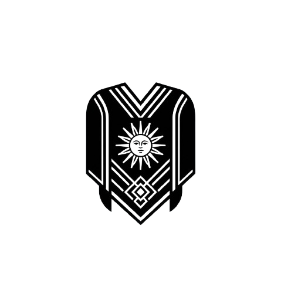

Un poncho
pensado para vos.
Contanos cómo imaginás tu pieza. Te acompañamos a elegir una dirección de color y estilo para conversar sobre un poncho personalizado a medida.
Empezá tu consulta
RUA CHAKY / HECHO A MANOTodo empieza con
una conversación.
Esta selección es una referencia visual para iniciar la charla. Los tonos y materiales finales se conversan con el taller según cada pieza.
Preguntas
frecuentes.
¿Cómo sé que el poncho es realmente artesanal?
Rua Chaky elabora sus piezas en Belén, Catamarca, con tradición textil regional y tintes naturales. Podés consultarnos y te contamos el proceso detrás de cada modelo.
¿Hacen envíos al exterior?
Sí. Coordinamos envíos dentro de Argentina y al exterior. Escribinos para conocer tiempos y costos según tu destino.
¿Puedo comprar un poncho como regalo?
Sí. Consultanos y te ayudamos a elegir el modelo ideal y la mejor forma de enviarlo.
¿Cómo elijo el modelo y el tamaño correcto?
Antes de confirmar, podés consultarnos por modelos disponibles, medidas y características de cada pieza. Te acompañamos en la decisión.
¿Cuánto tiempo tarda en llegar?
Los tiempos dependen del destino y de la disponibilidad de la pieza. Escribinos y te damos una estimación concreta.